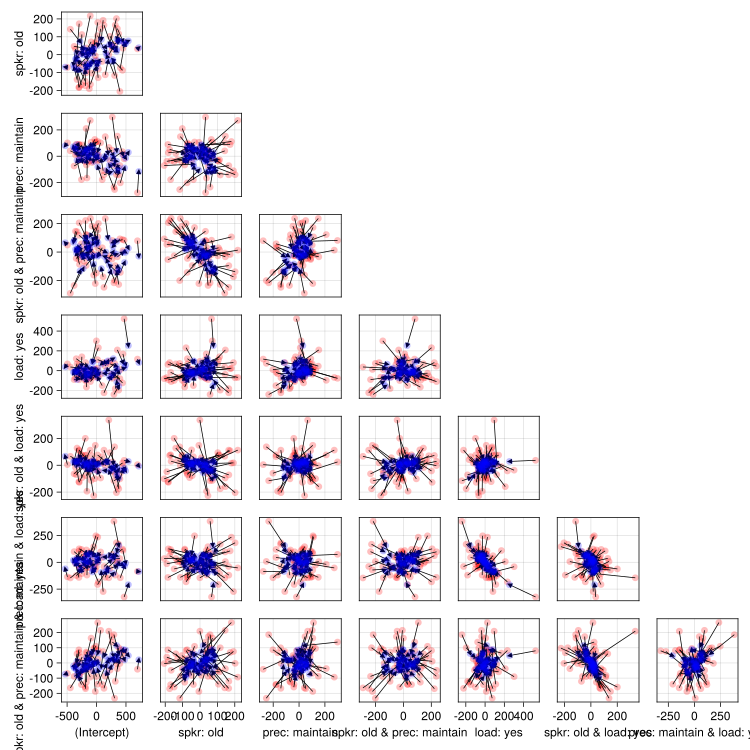
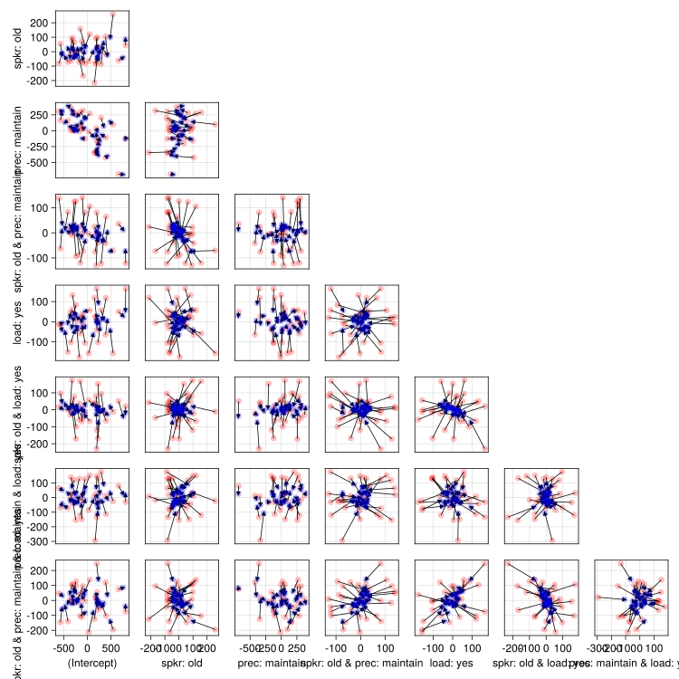
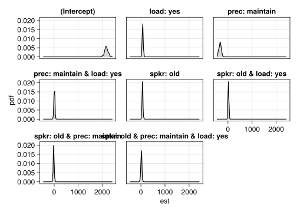

using AlgebraOfGraphics
using CairoMakie
using DataFrames
using GLM
using MixedModels
using MixedModelsMakie
using MixedModelsExtras
using MixedModelsSim
using ProgressMeter
using StatsModels
using StatsBase
using Random
CairoMakie.activate!(; type="svg")
ProgressMeter.ijulia_behavior(:clear);Simulation in Julia
How I learned to stop worrying and love the bootstrap
Recall….
kb07 = MixedModels.dataset(:kb07)
contrasts = Dict(:subj => Grouping(),
:item => Grouping(),
:spkr => EffectsCoding(),
:prec => EffectsCoding(),
:load => EffectsCoding())
form = @formula(rt_trunc ~ 1 + spkr * prec * load +
(1 + spkr * prec * load | subj) +
(1 + spkr * prec * load | item))
model = fit(MixedModel, form, kb07; contrasts)Minimizing 1697 Time: 0:00:04 ( 2.66 ms/it)
objective: 28578.379882306126| Est. | SE | z | p | σ_subj | σ_item | |
|---|---|---|---|---|---|---|
| (Intercept) | 2181.8600 | 76.9837 | 28.34 | <1e-99 | 301.6141 | 361.2191 |
| spkr: old | 67.7485 | 19.2522 | 3.52 | 0.0004 | 71.7552 | 41.6368 |
| prec: maintain | -333.9212 | 47.6946 | -7.00 | <1e-11 | 75.0742 | 249.7744 |
| load: yes | 78.5831 | 21.2565 | 3.70 | 0.0002 | 87.5743 | 53.7719 |
| spkr: old & prec: maintain | -21.7784 | 20.4371 | -1.07 | 0.2866 | 95.0200 | 31.9584 |
| spkr: old & load: yes | 18.3844 | 17.3845 | 1.06 | 0.2903 | 42.6824 | 38.0149 |
| prec: maintain & load: yes | 4.5339 | 22.4912 | 0.20 | 0.8402 | 86.6206 | 68.6652 |
| spkr: old & prec: maintain & load: yes | 23.4202 | 21.2220 | 1.10 | 0.2698 | 62.3229 | 70.7639 |
| Residual | 633.7265 |
model.rePCA(subj = [0.37031238827926216, 0.6417807855784552, 0.8792429052743644, 0.9999742210400684, 0.9999997919569437, 0.9999999996158602, 1.0, 1.0], item = [0.3557735142771573, 0.6333318296284408, 0.8146986374406038, 0.9481639067412695, 0.9998220284927168, 0.9999998992983445, 1.0, 1.0])shrinkageplot(model, :subj)
shrinkageplot(model, :item)
rng = MersenneTwister(42)
dat = DataFrame(kb07; copycols=true)
simple_form = @formula(rt_trunc ~ 1 + spkr * prec * load +
(1 + spkr + prec + load | subj) +
(1 + spkr + prec + load | item))
results = DataFrame()
simple_model = fit(MixedModel, simple_form, kb07; contrasts)
# if doing this yourself, add
# @showprogress
# before the for-loop and get an automatic progress bar
# courtesy of ProgressMeter.jl
for i in 1:100
refit!(simple_model, simulate(rng, model); progress=false)
est = DataFrame(coeftable(simple_model))
est[!, :iter] .= i
append!(results, est)
end
rename!(results,
"Name" => "coef",
"Coef." => "est",
"Std. Error" => "se",
"Pr(>|z|)" => "p")Minimizing 723 Time: 0:00:00 ( 0.52 ms/it)
objective: 28637.1393507629800 rows × 6 columns (omitted printing of 1 columns)
| coef | est | se | z | p | |
|---|---|---|---|---|---|
| String | Float64 | Float64 | Float64 | Float64 | |
| 1 | (Intercept) | 2174.26 | 70.8532 | 30.6868 | 8.54547e-207 |
| 2 | spkr: old | 68.0519 | 20.911 | 3.25437 | 0.00113645 |
| 3 | prec: maintain | -334.193 | 45.3748 | -7.36518 | 1.76904e-13 |
| 4 | load: yes | 58.4547 | 20.0004 | 2.92267 | 0.00347044 |
| 5 | spkr: old & prec: maintain | -5.99082 | 15.512 | -0.386205 | 0.699345 |
| 6 | spkr: old & load: yes | 21.037 | 15.512 | 1.35618 | 0.175043 |
| 7 | prec: maintain & load: yes | 12.3037 | 15.512 | 0.79317 | 0.427679 |
| 8 | spkr: old & prec: maintain & load: yes | 14.818 | 15.512 | 0.95526 | 0.339446 |
| 9 | (Intercept) | 2179.61 | 75.8682 | 28.729 | 1.65906e-181 |
| 10 | spkr: old | 80.3437 | 20.0774 | 4.0017 | 6.28895e-5 |
| 11 | prec: maintain | -296.967 | 48.7262 | -6.0946 | 1.09708e-9 |
| 12 | load: yes | 128.865 | 18.8431 | 6.83884 | 7.98346e-12 |
| 13 | spkr: old & prec: maintain | 4.57113 | 16.0816 | 0.284246 | 0.776222 |
| 14 | spkr: old & load: yes | 8.5144 | 16.0816 | 0.52945 | 0.596493 |
| 15 | prec: maintain & load: yes | -35.1976 | 16.0816 | -2.18869 | 0.0286193 |
| 16 | spkr: old & prec: maintain & load: yes | 7.49809 | 16.0816 | 0.466253 | 0.641034 |
| 17 | (Intercept) | 2189.87 | 72.1018 | 30.3719 | 1.29155e-202 |
| 18 | spkr: old | 96.4357 | 22.0957 | 4.36445 | 1.27445e-5 |
| 19 | prec: maintain | -353.001 | 50.2821 | -7.02042 | 2.2121e-12 |
| 20 | load: yes | 65.1378 | 23.1101 | 2.81858 | 0.00482366 |
| 21 | spkr: old & prec: maintain | 3.78206 | 15.7991 | 0.239384 | 0.810808 |
| 22 | spkr: old & load: yes | -5.20551 | 15.7991 | -0.329482 | 0.741792 |
| 23 | prec: maintain & load: yes | 25.0384 | 15.7991 | 1.5848 | 0.113012 |
| 24 | spkr: old & prec: maintain & load: yes | 37.7957 | 15.7991 | 2.39227 | 0.0167445 |
| 25 | (Intercept) | 2186.46 | 81.1255 | 26.9515 | 5.47511e-160 |
| 26 | spkr: old | 86.858 | 21.7973 | 3.98481 | 6.75331e-5 |
| 27 | prec: maintain | -329.516 | 49.0542 | -6.71738 | 1.85021e-11 |
| 28 | load: yes | 88.5548 | 20.7363 | 4.27051 | 1.95025e-5 |
| 29 | spkr: old & prec: maintain | -61.2774 | 16.0246 | -3.82396 | 0.000131324 |
| 30 | spkr: old & load: yes | 17.8356 | 16.0246 | 1.11302 | 0.265702 |
| ⋮ | ⋮ | ⋮ | ⋮ | ⋮ | ⋮ |
plt = data(results) * mapping(:est; layout=:coef) * AlgebraOfGraphics.density()
draw(plt)
combine(groupby(results, :coef), :est => shortestcovint => :est)8 rows × 2 columns
| coef | est | |
|---|---|---|
| String | Tuple… | |
| 1 | (Intercept) | (2027.76, 2317.46) |
| 2 | spkr: old | (25.8411, 97.5038) |
| 3 | prec: maintain | (-410.845, -236.202) |
| 4 | load: yes | (29.3886, 114.582) |
| 5 | spkr: old & prec: maintain | (-66.9195, 10.8659) |
| 6 | spkr: old & load: yes | (-8.39011, 58.4824) |
| 7 | prec: maintain & load: yes | (-30.6927, 50.2594) |
| 8 | spkr: old & prec: maintain & load: yes | (-36.9853, 52.137) |
combine(groupby(results, :coef),
:p => (x -> mean(x .< 0.05)) => :percent_significant)8 rows × 2 columns
| coef | percent_significant | |
|---|---|---|
| String | Float64 | |
| 1 | (Intercept) | 1.0 |
| 2 | spkr: old | 0.91 |
| 3 | prec: maintain | 1.0 |
| 4 | load: yes | 0.94 |
| 5 | spkr: old & prec: maintain | 0.34 |
| 6 | spkr: old & load: yes | 0.3 |
| 7 | prec: maintain & load: yes | 0.21 |
| 8 | spkr: old & prec: maintain & load: yes | 0.36 |